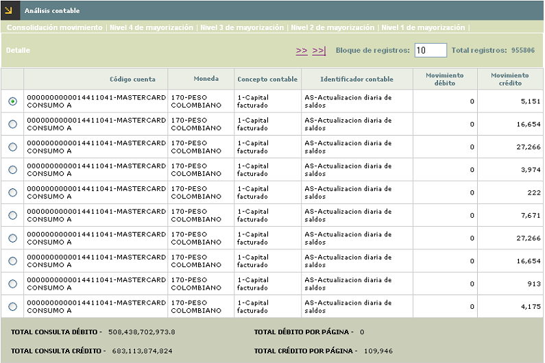
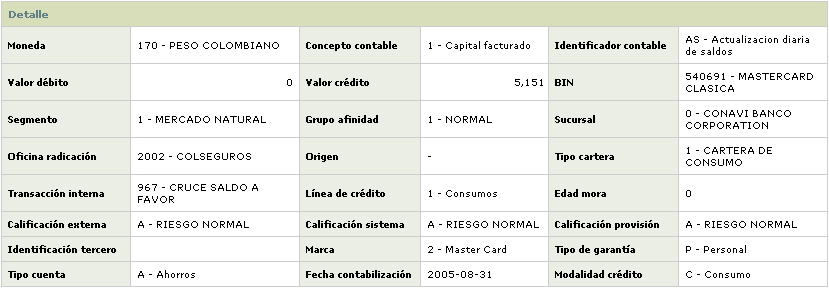
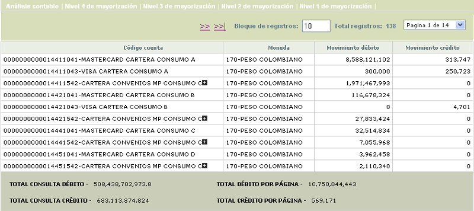
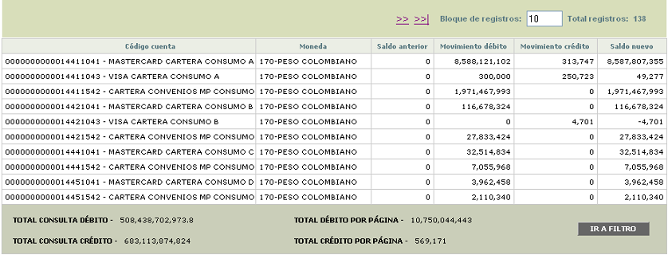

Análisis contable |
En este formulario la entidad puede consultar la información contable generada durante el proceso diario y la manera como se hizo la afectación de los diferentes registros. Debe tenerse en cuenta el momento de ejecución del proceso que agrupa el movimiento contable para garantizar que la información consultada en este formulario sea realmente la que corresponda al movimiento procesado.
El formulario contiene cinco hipervínculos que permiten invocar otros formulario que muestran la Consolidación del movimiento, Nivel de mayorización 4, Nivel de mayorización 3, Nivel de mayorización 2 y Nivel de mayorización 1.
El formulario de análisis contable solo contiene la opción Detalle.

Descripción de campos
Código
cuenta |
En este campo se muestra el código de la cuenta afectada contablemente y a la cual corresponde la información desplegada. |
Moneda
|
Campo
que muestra la moneda
en la cual llegó el registro y su asociación a la cuenta
contable de acuerdo con los atributos definidos en la parametrización. |
Concepto
contable |
De acuerdo con el tipo de movimiento, este campo muestra los conceptos con los cuales llegó la información para generar el registro contable a la cuenta |
Identificador contable |
Este
campo contiene, de acuerdo con el movimiento regitrado, el
identificador contable con el que llegó la información
para efectuar los respectivos registros contables a la cuenta. |
Movimiento
débito |
Campo
que muestra el valor total de los registros de naturaleza débito
aplicados a la cuenta, moneda, concepto contable e identificador durante
el día. |
Movimiento
crédito |
Este campo despliega el valor total de los registros de naturaleza crédito aplicados a la cuenta, moneda, concepto contable e identificador durante el día. |
Total
consulta débito |
Campo
de resumen que muestra el monto total de los movimientos de naturaleza
débito registrados durante el día. |
Total
consulta crédito |
Este campo de resumen contiene el monto total de los movimientos de naturaleza crédito registrados durante el día. |
Total
débito por página |
Campo
que muestra el monto (sumatoria) de los movimientos de naturaleza débito
correspondientes a los registros que se encuentran desplegados en la
página actual que está consultando el usuario. |
Total
crédito por página |
Este campo muestra el monto (sumatoria) de los movimientos de naturaleza crédito correspondientes a los registros que se encuentran desplegados en la página actual que está consultando el usuario. |
Si el usuario selecciona un registro e invoca la opciòn Detalle, se despliega un formulario con la informaciòn completa del registro y en el cual ninguno de sus campos es modificable.

Ademàs de algunos de los campos contenidos en el formulario inicial se muestran otros que se explican a continuaciòn:
Descripción de campos
Bin |
Campo
que muestra el bin con el cual llegò la informaciòn procesada y registrada en la cuenta contable |
Segmento |
Este campo indica el segmento con el cual llegò la informaciòn procesada y registrada en la cuenta contable |
Grupo de afinidad |
Campo que contiene el grupo de afinidad con el que llegò la informaciòn procesada y registrada en la cuenta contable. |
Sucursal |
Este campo indica la sucursal correspondiente a los registros procesados e incluidos en la cuenta contable. |
Oficina de radicaciòn |
Campo que contiene la sucursal correspondiente a la oficina de radicaciòn de las tarjetas con que llegò la informaciòn procesada y registrada en la cuenta contable. |
Origen |
En este campo se muestra el origen por medio del cual llegò la informaciòn procesada y registrada en la cuenta contable. |
Tipo cartera |
Campo que indica el tipo de cartera asociado a la tarjeta de crèdito con la cual llegò la informaciòn procesada y registrada en la cuenta contable. |
Transacciòn interna |
Este campo muestra la transacciòn interna con la cual llegò el movimiento para ser registrado en la cuenta contable. |
Lìnea de crèdito |
Campo que contiene la lìnea de crèdito a la cual pertenece la transacciòn y con la cual llego la informaciòn procesada y registrada en la cuenta contable. |
Edad mora |
En este campo se muestra la edad de mora de la tarjeta con la cual llegò la informaciòn procesada y registrada en la cuenta contable. |
Calificaciòn externa |
Campo que indica la calificaciòn externa de la tarjeta con la cual llegò la informaciòn procesada y registrada en la cuenta contable. |
Calificaciòn sistema |
En este campo se despliega la calificaciòn del sistema asociada a la tarjeta y con la cual llegò la informaciòn procesada y registrada en la cuenta contable. |
Calificaciòn provisiòn |
Campo que contiene la calificaciòn para provisiòn asociada a la tarjeta y con la cual llegò la informaciòn procesada y registrada en la cuenta contable. |
Identificaciòn tercero |
En este campo se muestra la indentificaciòn del tercero (para efectos de la interfase contable) con el cual llegò la informaciòn procesada y registrada en la cuenta contable. |
Marca |
Campo en el que se indica la marca a la que pertenece la tarjeta y con la cual llegò la informaciòn procesada y registrada en la cuenta contable. |
Tipo de garantìa |
En este campo se despliega el tipo de garantìa con el cual llegò la informaciòn procesada y registrada en la cuenta contable. |
Tipo cuenta |
Campo que muestra, de acuerdo con la informaciòn de los establecimientos, el tipo de cuenta con el cual llegò la informaciòn procesada y registrada en la cuenta contable. |
Fecha contabilizaciòn |
Este campo indica en formato YYYY-MM-DD la fecha en la cual se registrò la informaciòn contable. |
Modalidad de crèdito |
Muestra de acuerdo con la informaciòn procesada y registrada en la cuenta contable, la modalidad de crèdito con la cual llegò la informaciòn. |
Nivel de consolidaciòn: Si el usuario invoca el hipervìnculo Nivel de consolidaciòn se despliega un nuevo formulario que muestra un resumen general, acerca de las cuentas afectadas en el proceso diario; para facilitar la labor de consulta, esta función mostrará dicha información en orden ascendente de acuerdo con el código de cuenta contable a nivel de las cuentas auxiliares (todas las posiciones de la cuenta).
 Descripción de campos Código
cuenta En
este campo se muestra el código de la cuenta afectada contablemente
y a la cual corresponde la información desplegada. Moneda Campo
que muestra la moneda en la cual llegó el registro y su asociación a la cuenta
contable de acuerdo con los atributos definidos en la parametrización. Movimiento
débito Campo
que muestra el valor total de los registros de naturaleza débito
aplicados a la cuenta durante
el día. Movimiento
crédito Este
campo despliega el valor total de los registros de naturaleza crédito
aplicados a la cuenta durante
el día. Total
consulta débito Campo
de resumen que muestra el monto total de los movimientos de naturaleza
débito registrados durante el día. Total
consulta crédito Este
campo de resumen contiene el monto total de los movimientos de naturaleza
crédito registrados durante el día. Total
débito por página Campo
que muestra el monto (sumatoria) de los movimientos de naturaleza débito
correspondientes a los registros que se encuentran desplegados en la
página actual que está consultando el usuario. Total
crédito por página Este
campo muestra el monto (sumatoria) de los movimientos de naturaleza
crédito correspondientes a los registros que se encuentran desplegados
en la página actual que está consultando el usuario. Nivel '1,2,3,4' de mayorizaciòn: Si el usuario invoca cualquiera de los hipervìnculos Nivel 1,2,3 o 4 de mayorizaciòn se despliega un nuevo formulario que muestra de acuerdo con lo definido por la entidad en Paràmetros contables, las cuentas contables mayores en sus diferentes niveles. Los campos desplegados en cualquiera de estos formularios son los mismos y lo ùnico que cambia es el la cantidad de dìgitos de la cuenta mayor que se muestran al usuario, dato que se muestra en el mismo formulario. El formulario contiene un filtro que le permite al usuario consultar dentro de cada nivel de mayorizaciòn la informaciòn correspondiente a una cuenta determinada.  Descripción de campos Código
cuenta En
este campo se muestra el código de la cuenta afectada contablemente
y a la cual corresponde la información desplegada, de acuerdo con la cantidad de dìgitos señalada para el nivel de mayorizaciòn en los Paràmetros contables. Moneda Campo
que muestra la moneda en la cual llegó el registro y su asociación a la cuenta
contable de acuerdo con los atributos definidos en la parametrización. Saldo anterior Este campo contiene el saldo con el cual terminò la cuenta despuès de la ùltima afectaciòn contable efectuada sobre la misma. Movimiento dèbito Campo
que muestra la sumatoria de todos los registros tipo dèbito que tuvo la cuenta durante el dìa. Movimiento crèdito Este campo indica la sumatoria de todos los registros tipo crèdito que tuvo la cuenta durante el dìa. Saldo nuevo Campo
que muestra a partir del saldo anterior y las afectaciones de los movimientos dèbito y crèdito que se le aplicaron, el saldo final con el cual cierra la cuenta. Total
consulta débito Campo
de resumen que muestra el monto total de los movimientos de naturaleza
débito registrados durante el día. Total
consulta crédito Este
campo de resumen contiene el monto total de los movimientos de naturaleza
crédito registrados durante el día. Total
débito por página Campo
que muestra el monto (sumatoria) de los movimientos de naturaleza débito
correspondientes a los registros que se encuentran desplegados en la
página actual que está consultando el usuario. Total
crédito por página Este
campo muestra el monto (sumatoria) de los movimientos de naturaleza
crédito correspondientes a los registros que se encuentran desplegados
en la página actual que está consultando el usuario.